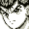
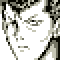
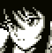
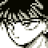
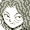
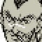
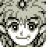
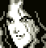
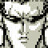

The graphics are good, and the game play is better than most Gameboy games. The fighting isn't as complex or challenging as most games these days, but it is an entertaining game.
In the story mode, you control a team of five characters in the Underworld
tournament. Before each battle, you can choose which character to use and how
much "power" and "spirit" he has in reserve. There are two bonus games during
the tournament that allow you to increase the amount of "power" and "spirit"
available.
The team battle mode allows you to choose five characters from any of the characters in the game. Your team will then face a computer or second player controlled team of five players to see who is the best team.
After playing the game a few times, you can pick up on the right character and strategy to beat each opponent. The order of the tournament opponents never changes, so the only replay value comes from trying to figure out how to do each character's special moves.
After pressing any button at the intro. screen, you will be presented with four choices. From playing the game, the choices are set up in this manner:
|
|
| SPECIAL MOVES LIST (massively incomplete) | |
|---|---|
| Character | Special Moves |
| Yuusuke |
Fireball: Away, Down, Down-Towards, Towards+Punch Rapid Punch: Down-Away+Punch Flying Rapid Punch: (in air) Down-Away+Punch |
| Kuabara | Long Sword: Away, Down, Down-Towards, Towards+Punch |
| Kurama | Leaf Shield: Away, Down, Down-Towards, Towards+Kick |
| Hiei | Rapid Hands: Down, Down-Towards, Towards+Punch |
| Genkai |
Rapid Hands: Down, Down-Towards, Towards+Punch Flying Rapid Hands: (in air) Down, Down-Towards, Towards+Punch Fireball: Away, Down, Down-Towards, Towards+Kick |
| Chu |
Whirling Kick: Towards, Down, Down-Away, Away+Kick Fireball: Away, Down, Down-Towards, Towards+Punch |
| Jin |
Dashing Attack: Away, Down-Away, Down, Down-Towards, Towards+Punch Whirling Attack: Away, Down, Down-Towards, Towards+Kick |
| Toguro Elder | Electric Field: Away, Down, Down-Towards, Towards+Kick |
| Toguro 80% | Fireball: Down, Down-Towards, Towards+Punch |
While the fighting sequences and graphics aren't that impressive, I find the concept of the game interesting. Figuring out the special moves and finding out where the stories are going will keep you busy for awhile.
After pressing any button at the intro. screen, you will be presented with four choices. From playing the game, the choices are set up in this manner:
|
|